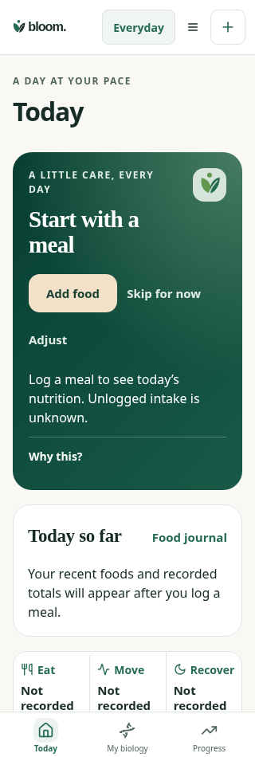
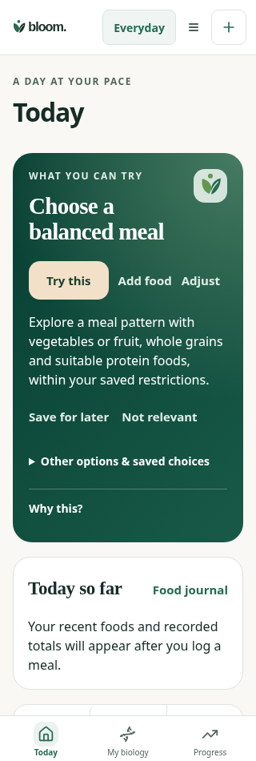
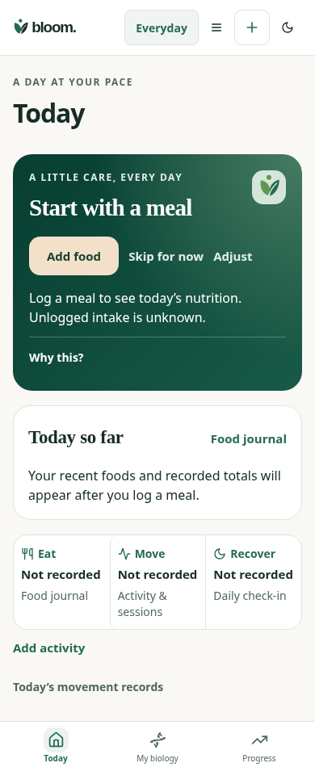
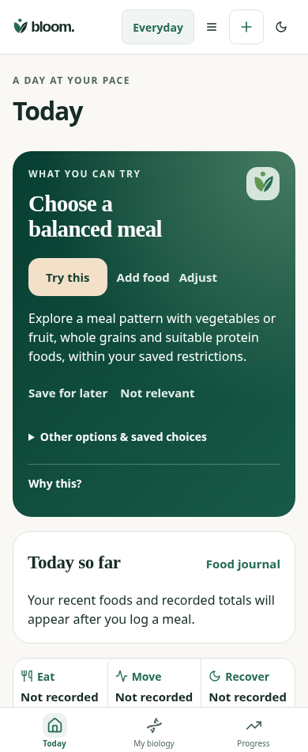
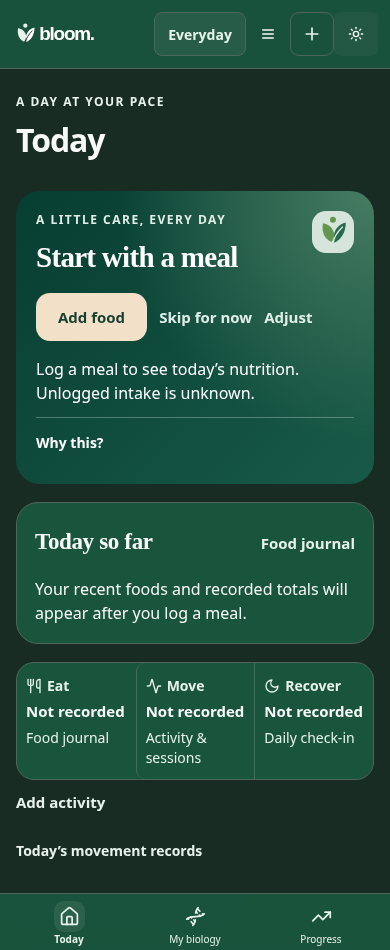
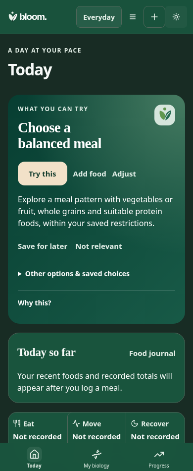

Controlled frontend comparison: baseline TodayFocus at5e8334f35d710b44610488a04bc19c739635dbec versus current implementation, same current shell/API and owned synthetic adult goal, no assays or prior choices. These are not historical hosted-app screenshots. Originals retained; no physical-device or independent Design acceptance claimed.





